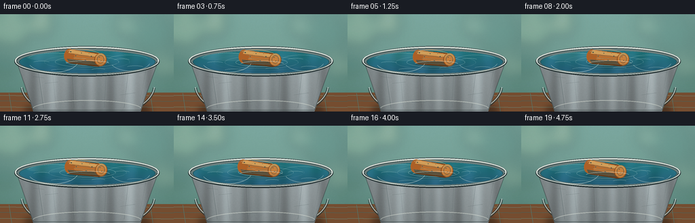
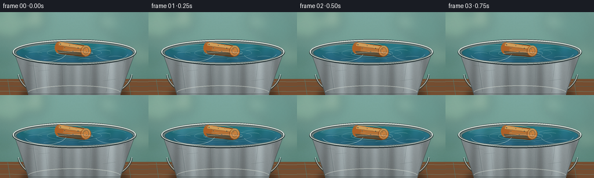

CODING AGENTS AS PIXEL WORLD MODELS
traex/GPT-5.6-Sol · mechanics_0009
点击播放 · 原生 RGB 像素
逐轮保存的候选
回放视频、检查图与代码变化。
每份候选均可单独播放。实际图片检查记录在下方工具轨迹中。
候选 01播放与检查图
点击播放 · 原生 RGB 像素


展开代码变化
--- 上一保存版本
+++ 本次保存版本
@@ -0,0 +1,231 @@
+from pathlib import Path
+import math
+import numpy as np
+from PIL import Image, ImageDraw, ImageFilter
+import artifact_io
+
+# Deterministic procedural animation. The scene is rendered at 3x and reduced
+# for clean antialiased edges; no external images or models are used.
+ROOT = Path(__file__).resolve().parent
+W, H, N = 256, 144, 20
+S = 3
+WW, HH = W*S, H*S
+rng = np.random.default_rng(94731)
+
+# Stable fine texture used on every frame (avoids video flicker).
+yy, xx = np.mgrid[0:HH, 0:WW]
+static_noise = rng.normal(0, 1, (HH, WW))
+static_noise = np.array(Image.fromarray(np.uint8(np.clip(static_noise*20+128,0,255))).filter(ImageFilter.GaussianBlur(1.2)), dtype=float)-128
+
+
+def sc(v): return int(round(v*S))
+def box(b): return tuple(sc(v) for v in b)
+def pts(p): return [(sc(x), sc(y)) for x,y in p]
+
+def background():
+ """Soft garden/wall setting and a weathered wooden support."""
+ y = yy / S
+ x = xx / S
+ # pale aqua/green background, darker at edges
+ top = np.zeros((HH,WW,3), dtype=float)
+ g = np.clip(y/120,0,1)
+ top[...,0] = 128 - 27*g
+ top[...,1] = 172 - 28*g
+ top[...,2] = 165 - 30*g
+ vign = ((x-128)/170)**2 + ((y-70)/115)**2
+ top -= vign[...,None]*18
+ top += static_noise[...,None]*0.10
+ arr = np.uint8(np.clip(top,0,255))
+ im = Image.fromarray(arr, 'RGB')
+ # defocused garden highlights
+ b = Image.new('RGBA',(WW,HH),(0,0,0,0)); d=ImageDraw.Draw(b)
+ circles=[(17,22,27,(191,214,174,54)),(61,14,18,(229,232,185,50)),
+ (224,29,31,(66,119,111,42)),(184,16,15,(213,231,203,42)),
+ (241,77,18,(211,219,171,30)),(11,76,14,(48,105,98,45))]
+ for cx,cy,r,c in circles: d.ellipse(box((cx-r,cy-r,cx+r,cy+r)),fill=c)
+ b=b.filter(ImageFilter.GaussianBlur(sc(9)))
+ im=Image.alpha_composite(im.convert('RGBA'),b)
+ # tabletop
+ wood=Image.new('RGBA',(WW,HH),(0,0,0,0)); d=ImageDraw.Draw(wood)
+ d.rectangle(box((0,116,256,144)),fill=(116,79,52,255))
+ # broad wood grain
+ for y0,col,wid in [(120,(151,107,71,90),1),(128,(67,44,31,100),1),(137,(164,112,72,70),1)]:
+ d.line(pts([(0,y0),(70,y0+1),(139,y0-1),(256,y0+1)]),fill=col,width=sc(wid))
+ for x0 in [13,45,86,174,221]:
+ d.line(pts([(x0,117),(x0+4,144)]),fill=(69,44,31,32),width=sc(.7))
+ im=Image.alpha_composite(im,wood)
+ return im
+
+
+def metallic_body(base):
+ # Contact shadow below pail
+ sh=Image.new('RGBA',(WW,HH),(0,0,0,0)); ds=ImageDraw.Draw(sh)
+ ds.ellipse(box((36,131,222,151)),fill=(29,27,23,130))
+ sh=sh.filter(ImageFilter.GaussianBlur(sc(5)))
+ base=Image.alpha_composite(base,sh)
+
+ # Handle behind the bucket
+ hd=Image.new('RGBA',(WW,HH),(0,0,0,0)); d=ImageDraw.Draw(hd)
+ d.arc(box((30,54,229,157)),4,176,fill=(40,54,54,170),width=sc(4.0))
+ d.arc(box((31,54,228,155)),4,176,fill=(197,211,207,210),width=sc(1.25))
+ base=Image.alpha_composite(base,hd)
+
+ # Trapezoidal galvanized body mask and directional metal gradient
+ mask=Image.new('L',(WW,HH),0); md=ImageDraw.Draw(mask)
+ md.polygon(pts([(24,67),(233,67),(207,144),(49,144)]),fill=255)
+ x=xx/S; y=yy/S
+ bands=(14*np.sin(x*.105)+7*np.sin(x*.33+1.1)+17*np.exp(-((x-86)/25)**2)
+ +23*np.exp(-((x-185)/19)**2))
+ vert=(y-68)*-.30
+ metal=np.zeros((HH,WW,4),dtype=np.uint8)
+ val=148+bands+vert+static_noise*.18
+ metal[...,0]=np.clip(val*.91,0,255)
+ metal[...,1]=np.clip(val*.98,0,255)
+ metal[...,2]=np.clip(val,0,255)
+ metal[...,3]=np.asarray(mask)
+ base=Image.alpha_composite(base,Image.fromarray(metal,'RGBA'))
+
+ detail=Image.new('RGBA',(WW,HH),(0,0,0,0)); d=ImageDraw.Draw(detail)
+ # vertical seams, scratches and bright curved lower edge
+ for x0,a in [(55,60),(76,25),(106,42),(157,32),(190,58),(216,34)]:
+ d.line(pts([(x0,75),(x0+(128-x0)*.12,138)]),fill=(43,61,63,a),width=sc(.65))
+ d.line(pts([(x0+1,76),(x0+1+(128-x0)*.12,132)]),fill=(227,237,232,a//2),width=sc(.5))
+ for x1,y1,x2,y2 in [(66,102,85,100),(178,119,199,116),(95,130,123,129),(199,87,215,85),(49,92,65,94)]:
+ d.line(pts([(x1,y1),(x2,y2)]),fill=(51,69,70,75),width=sc(.6))
+ d.arc(box((47,127,209,154)),188,352,fill=(222,229,219,110),width=sc(1.2))
+ # side edge definition
+ d.line(pts([(24,69),(49,142),(207,142),(233,69)]),fill=(55,69,70,155),width=sc(1.1),joint='curve')
+ base=Image.alpha_composite(base,detail)
+ return base
+
+
+def water_and_rim(base, frame):
+ phase=2*math.pi*frame/N
+ # Heavy rolled outer lip
+ rim=Image.new('RGBA',(WW,HH),(0,0,0,0)); d=ImageDraw.Draw(rim)
+ d.ellipse(box((21,47,235,92)),fill=(61,77,78,255))
+ d.ellipse(box((22,48,234,89)),outline=(214,225,219,255),width=sc(2.0))
+ d.ellipse(box((25,51,232,89)),fill=(104,126,126,255))
+ d.ellipse(box((28,54,229,87)),fill=(31,79,88,255))
+ base=Image.alpha_composite(base,rim)
+
+ # Water is an elliptical masked animated gradient.
+ wm=Image.new('L',(WW,HH),0); ImageDraw.Draw(wm).ellipse(box((29,54,228,87)),fill=255)
+ x=xx/S; y=yy/S
+ wave=(4*np.sin(x*.12+phase)+2.2*np.sin(x*.26-phase*1.4)+1.7*np.sin((x+y)*.17+phase*.5))
+ water=np.zeros((HH,WW,4),dtype=np.uint8)
+ water[...,0]=np.clip(37+wave,0,255)
+ water[...,1]=np.clip(111+wave*1.1-(y-65)*.8,0,255)
+ water[...,2]=np.clip(126+wave*1.7-(y-65)*.35,0,255)
+ water[...,3]=np.asarray(wm)
+ base=Image.alpha_composite(base,Image.fromarray(water,'RGBA'))
+
+ # Reflections and small travelling ripples, clipped to water ellipse.
+ wdetail=Image.new('RGBA',(WW,HH),(0,0,0,0)); d=ImageDraw.Draw(wdetail)
+ # soft sky stripe
+ d.ellipse(box((39,58,124,69)),fill=(190,220,211,24))
+ d.arc(box((41,57,118,75)),195,340,fill=(217,238,228,95),width=sc(.65))
+ d.arc(box((158,60,219,76)),200,341,fill=(184,218,215,70),width=sc(.6))
+ # tiny shimmer strokes with coherent sinusoidal movement
+ shimmer=[(49,69,73),(75,80,103),(168,66,191),(187,77,211),(99,60,114),(135,79,155)]
+ for k,(x1,y1,x2) in enumerate(shimmer):
+ off=1.1*math.sin(phase+k*1.7)
+ d.arc(box((x1,y1+off,x2,y1+4+off)),190,345,fill=(213,238,231,75),width=sc(.55))
+ wdetail.putalpha(Image.composite(wdetail.getchannel('A'),Image.new('L',(WW,HH),0),wm))
+ base=Image.alpha_composite(base,wdetail)
+ return base, wm
+
+
+def add_cork(base, wm, frame):
+ phase=2*math.pi*frame/N
+ cx=128 + 2.0*math.sin(phase*.75)
+ cy=65 + 1.15*math.sin(phase*1.05+.35)
+ angle=-7 + 2.2*math.sin(phase*.7)
+
+ # Submerged shadow/reflection under the cork
+ refl=Image.new('RGBA',(WW,HH),(0,0,0,0)); d=ImageDraw.Draw(refl)
+ d.ellipse(box((cx-31,cy+4,cx+34,cy+13)),fill=(20,58,60,72))
+ # elongated amber reflection
+ d.ellipse(box((cx-23,cy+6,cx+24,cy+11)),fill=(144,103,48,33))
+ refl=refl.filter(ImageFilter.GaussianBlur(sc(2.0)))
+ refl.putalpha(Image.composite(refl.getchannel('A'),Image.new('L',(WW,HH),0),wm))
+ base=Image.alpha_composite(base,refl)
+
+ # Concentric disturbance rings; each is born, expands, then fades.
+ rip=Image.new('RGBA',(WW,HH),(0,0,0,0)); d=ImageDraw.Draw(rip)
+ for j in range(3):
+ q=(frame/N + j/3.0) % 1.0
+ rx=31+q*48; ry=5.2+q*8.5
+ alpha=int(115*(1-q)**1.35)
+ d.ellipse(box((cx-rx,cy-ry+5,cx+rx,cy+ry+5)),outline=(215,239,231,alpha),width=sc(.7))
+ d.arc(box((cx-rx+1,cy-ry+6,cx+rx-1,cy+ry+6)),5,170,fill=(16,71,82,alpha//2),width=sc(.7))
+ rip.putalpha(Image.composite(rip.getchannel('A'),Image.new('L',(WW,HH),0),wm))
+ base=Image.alpha_composite(base,rip)
+
+ # Cork sprite, with pores and irregular longitudinal grain.
+ sw,sh=sc(74),sc(36)
+ spr=Image.new('RGBA',(sw,sh),(0,0,0,0)); sd=ImageDraw.Draw(spr)
+ # shadow edge
+ sd.rounded_rectangle(box((6,8,61,28)),radius=sc(7),fill=(102,57,25,255))
+ # warm cork body
+ sd.polygon(pts([(10,7),(55,9),(57,26),(10,27),(5,22),(5,13)]),fill=(181,112,53,255))
+ sd.ellipse(box((3,7,18,27)),fill=(169,98,43,255))
+ # body lighting ribbons
+ sd.polygon(pts([(11,8),(54,10),(54,14),(9,13)]),fill=(226,163,89,225))
+ sd.polygon(pts([(8,22),(55,21),(56,26),(11,27)]),fill=(122,69,31,150))
+ sd.line(pts([(13,14),(51,15)]),fill=(136,77,35,125),width=sc(.55))
+ sd.line(pts([(17,19),(54,18)]),fill=(238,179,99,100),width=sc(.6))
+ # prominent round end facing camera
+ sd.ellipse(box((48,8,66,27)),fill=(129,74,34,255))
+ sd.ellipse(box((49,8,65,26)),fill=(194,128,65,255))
+ sd.ellipse(box((52,11,62,23)),outline=(130,75,35,150),width=sc(.7))
+ sd.arc(box((50,9,64,26)),205,340,fill=(237,176,94,180),width=sc(1))
+ # repeatable pits/grain
+ pits=[(12,11,1.0),(20,16,.8),(28,11,.7),(35,21,1.0),(43,14,.8),(15,23,.6),
+ (26,24,.55),(39,10,.5),(46,22,.55),(55,14,.7),(58,19,.55)]
+ for px,py,r in pits:
+ sd.ellipse(box((px-r,py-r*.65,px+r,py+r*.65)),fill=(92,52,27,145))
+ if px<49: sd.point((sc(px),sc(py-0.6)),fill=(246,191,112,120))
+ # slight glossy top edge
+ sd.arc(box((5,5,61,23)),202,335,fill=(247,193,117,150),width=sc(.65))
+ spr=spr.rotate(angle,resample=Image.Resampling.BICUBIC,expand=True)
+ px=sc(cx)-spr.width//2; py=sc(cy)-spr.height//2
+ base.alpha_composite(spr,(px,py))
+
+ # Water line glints in front of the floating object, selling buoyancy.
+ fg=Image.new('RGBA',(WW,HH),(0,0,0,0)); fd=ImageDraw.Draw(fg)
+ fd.arc(box((cx-31,cy+3,cx+33,cy+12)),187,350,fill=(226,244,235,145),width=sc(.8))
+ fd.arc(box((cx-25,cy+4,cx+27,cy+10)),10,168,fill=(19,73,80,95),width=sc(.6))
+ fg.putalpha(Image.composite(fg.getchannel('A'),Image.new('L',(WW,HH),0),wm))
+ return Image.alpha_composite(base,fg)
+
+
+def foreground_rim(base):
+ # Front rolled lip overlays the water and establishes depth.
+ fg=Image.new('RGBA',(WW,HH),(0,0,0,0)); d=ImageDraw.Draw(fg)
+ d.arc(box((21,47,235,92)),4,176,fill=(38,52,54,220),width=sc(4.2))
+ d.arc(box((22,48,234,90)),5,176,fill=(205,218,212,255),width=sc(1.7))
+ d.arc(box((27,52,230,89)),5,176,fill=(93,112,113,255),width=sc(1.5))
+ # subtle dents/highlights
+ d.arc(box((41,52,115,86)),15,158,fill=(238,244,235,150),width=sc(.6))
+ d.arc(box((162,53,222,84)),18,154,fill=(228,238,231,115),width=sc(.55))
+ return Image.alpha_composite(base,fg)
+
+
+def render(i):
+ im=background()
+ im=metallic_body(im)
+ im,wm=water_and_rim(im,i)
+ im=add_cork(im,wm,i)
+ im=foreground_rim(im)
+ # Mild global color finish and downsample.
+ rgb=im.convert('RGB').resize((W,H),Image.Resampling.LANCZOS)
+ a=np.asarray(rgb,dtype=np.float32)
+ # restrained contrast and warm sun tint
+ a=(a-128)*1.035+128
+ a[...,0]+=2.0; a[...,2]-=1.0
+ return np.uint8(np.clip(a,0,255))
+
+frames=np.stack([render(i) for i in range(N)],axis=0)
+artifact_io.save(frames, ROOT)
+print(f"saved {frames.shape} {frames.dtype} to {ROOT}")
可观测工具轨迹
实际执行的命令与返回图片。
命令 1exit 0
/bin/bash -lc "cat prompt.txt && printf '\\n---RULES---\\n' && cat GENERATION_RULES.md && printf '\\n---SPEC---\\n' && cat task_spec.json"
命令 2exit 1
/bin/bash -lc "find . -maxdepth 2 -type f -printf '%p %s bytes\\n' | sort && printf '\\nTOOLS\\n' && command -v ffmpeg && command -v python3 && python3 - <<'PY' mods=['PIL','numpy','cv2','imageio','cairo'] for m in mods: try: x=__import__(m); print(m,'OK') except Exception as e: print(m,'NO',e) PY"
命令 3exit 0
/bin/bash -lc "cat artifact_io.py; printf '\\nBINARIES\\n'; for x in python3 python ffmpeg convert; do command -v \""'$x" || true; done; python3 - <<'"'PY' mods=['PIL','numpy','cv2','imageio'] for m in mods: try: x=__import__(m); print(m,'OK',getattr(x,'__version__','')) except Exception as e: print(m,'NO',repr(e)) PY"
命令 4exit 0
/bin/bash -lc "cat > generate.py <<'PY'
from pathlib import Path
import math
import numpy as np
from PIL import Image, ImageDraw, ImageFilter
import artifact_io
# Deterministic procedural animation. The scene is rendered at 3x and reduced
# for clean antialiased edges; no external images or models are used.
ROOT = Path(__file__).resolve().parent
W, H, N = 256, 144, 20
S = 3
WW, HH = W*S, H*S
rng = np.random.default_rng(94731)
# Stable fine texture used on every frame (avoids video flicker).
yy, xx = np.mgrid[0:HH, 0:WW]
static_noise = rng.normal(0, 1, (HH, WW))
static_noise = np.array(Image.fromarray(np.uint8(np.clip(static_noise*20+128,0,255))).filter(ImageFilter.GaussianBlur(1.2)), dtype=float)-128
def sc(v): return int(round(v*S))
def box(b): return tuple(sc(v) for v in b)
def pts(p): return [(sc(x), sc(y)) for x,y in p]
def background():
\"\"\"Soft garden/wall setting and a weathered wooden support.\"\"\"
y = yy / S
x = xx / S
# pale aqua/green background, darker at edges
top = np.zeros((HH,WW,3), dtype=float)
g = np.clip(y/120,0,1)
top[...,0] = 128 - 27*g
top[...,1] = 172 - 28*g
top[...,2] = 165 - 30*g
vign = ((x-128)/170)**2 + ((y-70)/115)**2
top -= vign[...,None]*18
top += static_noise[...,None]*0.10
arr = np.uint8(np.clip(top,0,255))
im = Image.fromarray(arr, 'RGB')
# defocused garden highlights
b = Image.new('RGBA',(WW,HH),(0,0,0,0)); d=ImageDraw.Draw(b)
circles=[(17,22,27,(191,214,174,54)),(61,14,18,(229,232,185,50)),
(224,29,31,(66,119,111,42)),(184,16,15,(213,231,203,42)),
(241,77,18,(211,219,171,30)),(11,76,14,(48,105,98,45))]
for cx,cy,r,c in circles: d.ellipse(box((cx-r,cy-r,cx+r,cy+r)),fill=c)
b=b.filter(ImageFilter.GaussianBlur(sc(9)))
im=Image.alpha_composite(im.convert('RGBA'),b)
# tabletop
wood=Image.new('RGBA',(WW,HH),(0,0,0,0)); d=ImageDraw.Draw(wood)
d.rectangle(box((0,116,256,144)),fill=(116,79,52,255))
# broad wood grain
for y0,col,wid in [(120,(151,107,71,90),1),(128,(67,44,31,100),1),(137,(164,112,72,70),1)]:
d.line(pts([(0,y0),(70,y0+1),(139,y0-1),(256,y0+1)]),fill=col,width=sc(wid))
for x0 in [13,45,86,174,221]:
d.line(pts([(x0,117),(x0+4,144)]),fill=(69,44,31,32),width=sc(.7))
im=Image.alpha_composite(im,wood)
return im
def metallic_body(base):
# Contact shadow below pail
sh=Image.new('RGBA',(WW,HH),(0,0,0,0)); ds=ImageDraw.Draw(sh)
ds.ellipse(box((36,131,222,151)),fill=(29,27,23,130))
sh=sh.filter(ImageFilter.GaussianBlur(sc(5)))
base=Image.alpha_composite(base,sh)
# Handle behind the bucket
hd=Image.new('RGBA',(WW,HH),(0,0,0,0)); d=ImageDraw.Draw(hd)
d.arc(box((30,54,229,157)),4,176,fill=(40,54,54,170),width=sc(4.0))
d.arc(box((31,54,228,155)),4,176,fill=(197,211,207,210),width=sc(1.25))
base=Image.alpha_composite(base,hd)
# Trapezoidal galvanized body mask and directional metal gradient
mask=Image.new('L',(WW,HH),0); md=ImageDraw.Draw(mask)
md.polygon(pts([(24,67),(233,67),(207,144),(49,144)]),fill=255)
x=xx/S; y=yy/S
bands=(14*np.sin(x*.105)+7*np.sin(x*.33+1.1)+17*np.exp(-((x-86)/25)**2)
+23*np.exp(-((x-185)/19)**2))
vert=(y-68)*-.30
metal=np.zeros((HH,WW,4),dtype=np.uint8)
val=148+bands+vert+static_noise*.18
metal[...,0]=np.clip(val*.91,0,255)
metal[...,1]=np.clip(val*.98,0,255)
metal[...,2]=np.clip(val,0,255)
metal[...,3]=np.asarray(mask)
base=Image.alpha_composite(base,Image.fromarray(metal,'RGBA'))
detail=Image.new('RGBA',(WW,HH),(0,0,0,0)); d=ImageDraw.Draw(detail)
# vertical seams, scratches and bright curved lower edge
for x0,a in [(55,60),(76,25),(106,42),(157,32),(190,58),(216,34)]:
d.line(pts([(x0,75),(x0+(128-x0)*.12,138)]),fill=(43,61,63,a),width=sc(.65))
d.line(pts([(x0+1,76),(x0+1+(128-x0)*.12,132)]),fill=(227,237,232,a//2),width=sc(.5))
for x1,y1,x2,y2 in [(66,102,85,100),(178,119,199,116),(95,130,123,129),(199,87,215,85),(49,92,65,94)]:
d.line(pts([(x1,y1),(x2,y2)]),fill=(51,69,70,75),width=sc(.6))
d.arc(box((47,127,209,154)),188,352,fill=(222,229,219,110),width=sc(1.2))
# side edge definition
d.line(pts([(24,69),(49,142),(207,142),(233,69)]),fill=(55,69,70,155),width=sc(1.1),joint='curve')
base=Image.alpha_composite(base,detail)
return base
def water_and_rim(base, frame):
phase=2*math.pi*frame/N
# Heavy rolled outer lip
rim=Image.new('RGBA',(WW,HH),(0,0,0,0)); d=ImageDraw.Draw(rim)
d.ellipse(box((21,47,235,92)),fill=(61,77,78,255))
d.ellipse(box((22,48,234,89)),outline=(214,225,219,255),width=sc(2.0))
d.ellipse(box((25,51,232,89)),fill=(104,126,126,255))
d.ellipse(box((28,54,229,87)),fill=(31,79,88,255))
base=Image.alpha_composite(base,rim)
# Water is an elliptical masked animated gradient.
wm=Image.new('L',(WW,HH),0); ImageDraw.Draw(wm).ellipse(box((29,54,228,87)),fill=255)
x=xx/S; y=yy/S
wave=(4*np.sin(x*.12+phase)+2.2*np.sin(x*.26-phase*1.4)+1.7*np.sin((x+y)*.17+phase*.5))
water=np.zeros((HH,WW,4),dtype=np.uint8)
water[...,0]=np.clip(37+wave,0,255)
water[...,1]=np.clip(111+wave*1.1-(y-65)*.8,0,255)
water[...,2]=np.clip(126+wave*1.7-(y-65)*.35,0,255)
water[...,3]=np.asarray(wm)
base=Image.alpha_composite(base,Image.fromarray(water,'RGBA'))
# Reflections and small travelling ripples, clipped to water ellipse.
wdetail=Image.new('RGBA',(WW,HH),(0,0,0,0)); d=ImageDraw.Draw(wdetail)
# soft sky stripe
d.ellipse(box((39,58,124,69)),fill=(190,220,211,24))
d.arc(box((41,57,118,75)),195,340,fill=(217,238,228,95),width=sc(.65))
d.arc(box((158,60,219,76)),200,341,fill=(184,218,215,70),width=sc(.6))
# tiny shimmer strokes with coherent sinusoidal movement
shimmer=[(49,69,73),(75,80,103),(168,66,191),(187,77,211),(99,60,114),(135,79,155)]
for k,(x1,y1,x2) in enumerate(shimmer):
off=1.1*math.sin(phase+k*1.7)
d.arc(box((x1,y1+off,x2,y1+4+off)),190,345,fill=(213,238,231,75),width=sc(.55))
wdetail.putalpha(Image.composite(wdetail.getchannel('A'),Image.new('L',(WW,HH),0),wm))
base=Image.alpha_composite(base,wdetail)
return base, wm
def add_cork(base, wm, frame):
phase=2*math.pi*frame/N
cx=128 + 2.0*math.sin(phase*.75)
cy=65 + 1.15*math.sin(phase*1.05+.35)
angle=-7 + 2.2*math.sin(phase*.7)
# Submerged shadow/reflection under the cork
refl=Image.new('RGBA',(WW,HH),(0,0,0,0)); d=ImageDraw.Draw(refl)
d.ellipse(box((cx-31,cy+4,cx+34,cy+13)),fill=(20,58,60,72))
# elongated amber reflection
d.ellipse(box((cx-23,cy+6,cx+24,cy+11)),fill=(144,103,48,33))
refl=refl.filter(ImageFilter.GaussianBlur(sc(2.0)))
refl.putalpha(Image.composite(refl.getchannel('A'),Image.new('L',(WW,HH),0),wm))
base=Image.alpha_composite(base,refl)
# Concentric disturbance rings; each is born, expands, then fades.
rip=Image.new('RGBA',(WW,HH),(0,0,0,0)); d=ImageDraw.Draw(rip)
for j in range(3):
q=(frame/N + j/3.0) % 1.0
rx=31+q*48; ry=5.2+q*8.5
alpha=int(115*(1-q)**1.35)
d.ellipse(box((cx-rx,cy-ry+5,cx+rx,cy+ry+5)),outline=(215,239,231,alpha),width=sc(.7))
d.arc(box((cx-rx+1,cy-ry+6,cx+rx-1,cy+ry+6)),5,170,fill=(16,71,82,alpha//2),width=sc(.7))
rip.putalpha(Image.composite(rip.getchannel('A'),Image.new('L',(WW,HH),0),wm))
base=Image.alpha_composite(base,rip)
# Cork sprite, with pores and irregular longitudinal grain.
sw,sh=sc(74),sc(36)
spr=Image.new('RGBA',(sw,sh),(0,0,0,0)); sd=ImageDraw.Draw(spr)
# shadow edge
sd.rounded_rectangle(box((6,8,61,28)),radius=sc(7),fill=(102,57,25,255))
# warm cork body
sd.polygon(pts([(10,7),(55,9),(57,26),(10,27),(5,22),(5,13)]),fill=(181,112,53,255))
sd.ellipse(box((3,7,18,27)),fill=(169,98,43,255))
# body lighting ribbons
sd.polygon(pts([(11,8),(54,10),(54,14),(9,13)]),fill=(226,163,89,225))
sd.polygon(pts([(8,22),(55,21),(56,26),(11,27)]),fill=(122,69,31,150))
sd.line(pts([(13,14),(51,15)]),fill=(136,77,35,125),width=sc(.55))
sd.line(pts([(17,19),(54,18)]),fill=(238,179,99,100),width=sc(.6))
# prominent round end facing camera
sd.ellipse(box((48,8,66,27)),fill=(129,74,34,255))
sd.ellipse(box((49,8,65,26)),fill=(194,128,65,255))
sd.ellipse(box((52,11,62,23)),outline=(130,75,35,150),width=sc(.7))
sd.arc(box((50,9,64,26)),205,340,fill=(237,176,94,180),width=sc(1))
# repeatable pits/grain
pits=[(12,11,1.0),(20,16,.8),(28,11,.7),(35,21,1.0),(43,14,.8),(15,23,.6),
(26,24,.55),(39,10,.5),(46,22,.55),(55,14,.7),(58,19,.55)]
for px,py,r in pits:
sd.ellipse(box((px-r,py-r*.65,px+r,py+r*.65)),fill=(92,52,27,145))
if px<49: sd.point((sc(px),sc(py-0.6)),fill=(246,191,112,120))
# slight glossy top edge
sd.arc(box((5,5,61,23)),202,335,fill=(247,193,117,150),width=sc(.65))
spr=spr.rotate(angle,resample=Image.Resampling.BICUBIC,expand=True)
px=sc(cx)-spr.width//2; py=sc(cy)-spr.height//2
base.alpha_composite(spr,(px,py))
# Water line glints in front of the floating object, selling buoyancy.
fg=Image.new('RGBA',(WW,HH),(0,0,0,0)); fd=ImageDraw.Draw(fg)
fd.arc(box((cx-31,cy+3,cx+33,cy+12)),187,350,fill=(226,244,235,145),width=sc(.8))
fd.arc(box((cx-25,cy+4,cx+27,cy+10)),10,168,fill=(19,73,80,95),width=sc(.6))
fg.putalpha(Image.composite(fg.getchannel('A'),Image.new('L',(WW,HH),0),wm))
return Image.alpha_composite(base,fg)
def foreground_rim(base):
# Front rolled lip overlays the water and establishes depth.
fg=Image.new('RGBA',(WW,HH),(0,0,0,0)); d=ImageDraw.Draw(fg)
d.arc(box((21,47,235,92)),4,176,fill=(38,52,54,220),width=sc(4.2))
d.arc(box((22,48,234,90)),5,176,fill=(205,218,212,255),width=sc(1.7))
d.arc(box((27,52,230,89)),5,176,fill=(93,112,113,255),width=sc(1.5))
# subtle dents/highlights
d.arc(box((41,52,115,86)),15,158,fill=(238,244,235,150),width=sc(.6))
d.arc(box((162,53,222,84)),18,154,fill=(228,238,231,115),width=sc(.55))
return Image.alpha_composite(base,fg)
def render(i):
im=background()
im=metallic_body(im)
im,wm=water_and_rim(im,i)
im=add_cork(im,wm,i)
im=foreground_rim(im)
# Mild global color finish and downsample.
rgb=im.convert('RGB').resize((W,H),Image.Resampling.LANCZOS)
a=np.asarray(rgb,dtype=np.float32)
# restrained contrast and warm sun tint
a=(a-128)*1.035+128
a[...,0]+=2.0; a[...,2]-=1.0
return np.uint8(np.clip(a,0,255))
frames=np.stack([render(i) for i in range(N)],axis=0)
artifact_io.save(frames, ROOT)
print(f\"saved {frames.shape} {frames.dtype} to {ROOT}\")
PY
python3 generate.py
ls -lh pixels.npz inspection.png index.html frames/00.png frames/19.png"命令 5exit 0
/bin/bash -lc "python3 - <<'PY'
from pathlib import Path
import numpy as np
from PIL import Image
z=np.load('pixels.npz')['pixels']
assert z.shape==(144,256,20) and z.dtype==np.uint32
ims=np.stack([np.asarray(Image.open(f'frames/{i:02}.png').convert('RGB')) for i in range(20)])
assert ims.shape==(20,144,256,3) and ims.dtype==np.uint8
assert np.array_equal(z.transpose(2,0,1), (ims[...,0].astype(np.uint32)<<16)|(ims[...,1].astype(np.uint32)<<8)|ims[...,2])
diff=np.mean(np.abs(np.diff(ims.astype(np.int16),axis=0)),axis=(1,2,3))
changed=np.mean(np.any(np.diff(ims,axis=0)"'!=0,axis=3),axis=(1,2))
print('"'validated shape/dtype/packing')
print('frame mean RGB:', np.round(ims.mean((0,1,2)),1))
print('adjacent MAD range:',round(diff.min(),3),round(diff.max(),3),'changed fraction:',round(changed.min(),3),round(changed.max(),3))
print('artifacts:', ', '.join(f'{p.name}={p.stat().st_size}' for p in map(Path,['pixels.npz','index.html','inspection.png','transition_check.png'])))
PY"保存候选 1 份；完成命令 5 次；可验证图片返回 0 张。原始 API 响应与完整日志保留在本地。